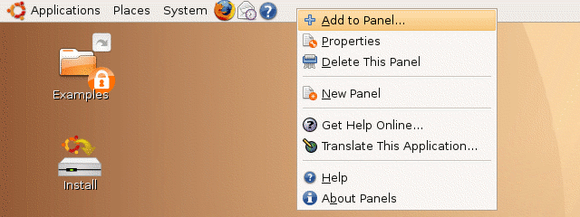
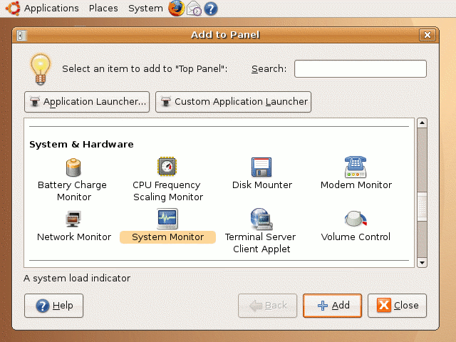
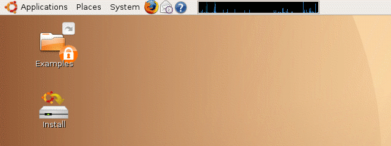

| vlsitechnology.org /Live CD help /add panel program | |
Add program to panel | |
Linux help
Windows help
Linux Live CD
The panel is the bar at the top of the screen and it can be used to hold icons for launching programs or other useful tasks like a clock or a system monitor. A system monitor shows the CPU activity and is particularly useful on a Linux computer which is built to do multiple tasks at the same time. The monitor shows whether it is already loaded or able to handle an extra job.
The library examples involve a job that takes a VHDL behavioural description and converts it into a layout. The flow to do this includes many iterations in an attempt to find the quickest solution. The job takes time to finish, and the system monitor is useful to check whether anything is actually happening.
A program can be added to the panel by right clicking on the panel and selecting Add to Panel… .

Find the System Monitor application, click on it and then on Add to install it on the panel.

The system monitor can be adjusted for position and width. When it is a solid blue then the CPU is 100% active.
